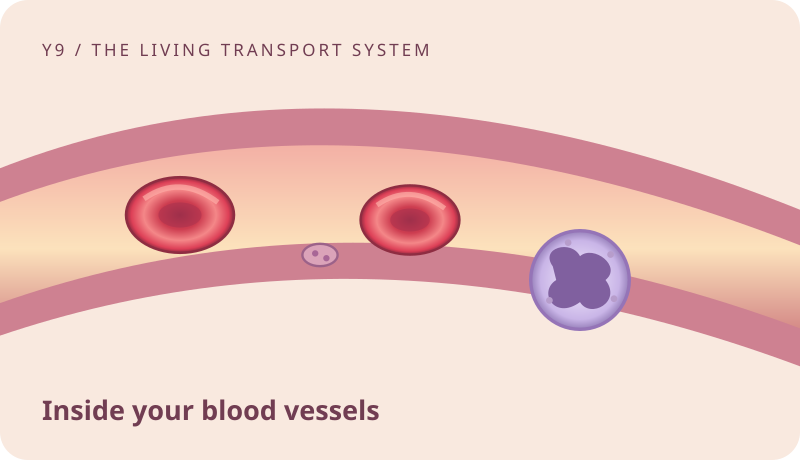

Blood vessels and blood Preparation and worked examples
Start with the unit’s illustrated lesson, then use these notes to connect the vocabulary, models and worked examples before you answer questions. An example shows the reasoning; the practical lets you test it.

Read and explain. Learn the vocabulary and say why the process works.
Work through an example. Identify the known information, rule and result.
Investigate, then apply. Return to the practical, game or revision simulator.
01
Blood composition
Understand the ideas
Plasma suspends formed elements and carries dissolved materials. It is mostly water, but also contains proteins, ions and other substances.
Platelets are fragments released by large bone-marrow cells. They help form a plug at vessel damage.
White cells are complete nucleated cells. Mature human red cells lack a nucleus, and platelets are fragments.
The example has 55% plasma by volume, a very thin buffy coat and about 45% red cells. These are illustrative values, not fixed for every person.
The denser red cells collect below plasma and the thin buffy coat. Separation is physical, not production of new blood components.
The buffy coat is a thin pale layer containing white cells and platelets between plasma and packed red cells.
Layer heights in a uniform tube indicate approximate volume fractions. They do not directly count cells.
An anticoagulant prevents coagulation, allowing plasma and formed elements to be separated. A clotting sample instead leaves serum around a clot.
The fractions must total 100%: 100 − 55 − 0.5 = 44.5%. This example illustrates volume, not cell-number percentages.
Plasma from anticoagulated blood retains clotting proteins. During clotting, fibrinogen is converted into fibrin, so the remaining serum differs.
Follow the worked examples
Try to explain the example first, then open it to compare your reasoning.
Worked example · What is plasma?
Result: The liquid part of blood, containing water and dissolved substances.
Reasoning: Plasma suspends formed elements and carries dissolved materials. It is mostly water, but also contains proteins, ions and other substances.
Explain the reasoning in your own words, then compare it with the practical model. For a calculation, identify the known quantities and units before choosing the rule.
Worked example · Which is a cell fragment rather than a complete cell?
Result: A platelet.
Reasoning: Platelets are fragments released by large bone-marrow cells. They help form a plug at vessel damage.
Explain the reasoning in your own words, then compare it with the practical model. For a calculation, identify the known quantities and units before choosing the rule.
Worked example · Which human blood component normally has a nucleus?
Result: A white blood cell.
Reasoning: White cells are complete nucleated cells. Mature human red cells lack a nucleus, and platelets are fragments.
Explain the reasoning in your own words, then compare it with the practical model. For a calculation, identify the known quantities and units before choosing the rule.
Worked example · Which component normally occupies the largest fraction of whole-blood volume in the teaching example?
Result: Plasma.
Reasoning: The example has 55% plasma by volume, a very thin buffy coat and about 45% red cells. These are illustrative values, not fixed for every person.
Explain the reasoning in your own words, then compare it with the practical model. For a calculation, identify the known quantities and units before choosing the rule.
Worked example · In an anticoagulated sample after centrifugation, which layer is at the bottom?
Result: The packed red-cell layer.
Reasoning: The denser red cells collect below plasma and the thin buffy coat. Separation is physical, not production of new blood components.
Explain the reasoning in your own words, then compare it with the practical model. For a calculation, identify the known quantities and units before choosing the rule.
Worked example · What is in the buffy coat?
Result: White cells and platelets.
Reasoning: The buffy coat is a thin pale layer containing white cells and platelets between plasma and packed red cells.
Explain the reasoning in your own words, then compare it with the practical model. For a calculation, identify the known quantities and units before choosing the rule.
Worked example · What do the heights of separated blood layers mainly represent?
Result: Fractions of blood volume.
Reasoning: Layer heights in a uniform tube indicate approximate volume fractions. They do not directly count cells.
Explain the reasoning in your own words, then compare it with the practical model. For a calculation, identify the known quantities and units before choosing the rule.
Worked example · Why does the centrifuge sample contain an anticoagulant?
Result: To prevent clotting while components are separated.
Reasoning: An anticoagulant prevents coagulation, allowing plasma and formed elements to be separated. A clotting sample instead leaves serum around a clot.
Explain the reasoning in your own words, then compare it with the practical model. For a calculation, identify the known quantities and units before choosing the rule.
Worked example · A tube contains 55% plasma and 0.5% buffy coat by volume. What fraction remains for red cells?
Result: 44.5%.
Reasoning: The fractions must total 100%: 100 − 55 − 0.5 = 44.5%. This example illustrates volume, not cell-number percentages.
Explain the reasoning in your own words, then compare it with the practical model. For a calculation, identify the known quantities and units before choosing the rule.
Worked example · Which statement correctly distinguishes plasma and serum?
Result: Serum is the liquid remaining after blood clots and lacks fibrinogen consumed in clotting.
Reasoning: Plasma from anticoagulated blood retains clotting proteins. During clotting, fibrinogen is converted into fibrin, so the remaining serum differs.
Explain the reasoning in your own words, then compare it with the practical model. For a calculation, identify the known quantities and units before choosing the rule.
02
Red cells and oxygen
Understand the ideas
Oxygen binds reversibly to haemoglobin. A small amount is dissolved, but most is carried by red cells.
A biconcave disc is thinner centrally on both faces. This supports a large exchange surface relative to volume and a short diffusion distance.
Red cells often pass through capillaries in single file and deform without normally leaving the intact vessel.
Blood remains red because of haemoglobin. Diagrams sometimes colour return routes blue or purple, but this is a drawing convention.
At the lungs, oxygen diffuses from alveolar air into blood and binds haemoglobin. It can unload at body tissues.
Oxygen unloads and diffuses across the exchange surface; whole red cells normally remain in intact vessels.
Loss of the nucleus supports the red cell’s specialised carrying role. It also limits its ability to make repairs and new proteins.
Oxygen use helps maintain a gradient. Blood flow brings more oxygen, and oxygen can unload from haemoglobin and diffuse towards tissue.
Less haemoglobin can reduce oxygen-carrying capacity. This model does not diagnose a cause or predict an individual’s symptoms.
A biconcave red cell has a favourable surface-to-volume relationship, short diffusion distances and flexibility; haemoglobin binds the oxygen.
Follow the worked examples
Try to explain the example first, then open it to compare your reasoning.
Worked example · What carries most oxygen in human blood?
Result: Haemoglobin inside red blood cells.
Reasoning: Oxygen binds reversibly to haemoglobin. A small amount is dissolved, but most is carried by red cells.
Explain the reasoning in your own words, then compare it with the practical model. For a calculation, identify the known quantities and units before choosing the rule.
Worked example · What does biconcave mean for a red cell?
Result: It has an inward dip on each face.
Reasoning: A biconcave disc is thinner centrally on both faces. This supports a large exchange surface relative to volume and a short diffusion distance.
Explain the reasoning in your own words, then compare it with the practical model. For a calculation, identify the known quantities and units before choosing the rule.
Worked example · How does flexibility help a red cell?
Result: It can deform through narrow capillaries.
Reasoning: Red cells often pass through capillaries in single file and deform without normally leaving the intact vessel.
Explain the reasoning in your own words, then compare it with the practical model. For a calculation, identify the known quantities and units before choosing the rule.
Worked example · What colour is normal oxygen-poor blood?
Result: Dark red.
Reasoning: Blood remains red because of haemoglobin. Diagrams sometimes colour return routes blue or purple, but this is a drawing convention.
Explain the reasoning in your own words, then compare it with the practical model. For a calculation, identify the known quantities and units before choosing the rule.
Worked example · Where does oxygen normally load onto haemoglobin?
Result: In blood passing the lung exchange surface.
Reasoning: At the lungs, oxygen diffuses from alveolar air into blood and binds haemoglobin. It can unload at body tissues.
Explain the reasoning in your own words, then compare it with the practical model. For a calculation, identify the known quantities and units before choosing the rule.
Worked example · What normally happens to a red cell when it supplies oxygen to muscle?
Result: It remains inside the vessel while oxygen transfers towards tissue.
Reasoning: Oxygen unloads and diffuses across the exchange surface; whole red cells normally remain in intact vessels.
Explain the reasoning in your own words, then compare it with the practical model. For a calculation, identify the known quantities and units before choosing the rule.
Worked example · Why is lacking a nucleus useful for a mature human red cell?
Result: It leaves more room for haemoglobin.
Reasoning: Loss of the nucleus supports the red cell’s specialised carrying role. It also limits its ability to make repairs and new proteins.
Explain the reasoning in your own words, then compare it with the practical model. For a calculation, identify the known quantities and units before choosing the rule.
Worked example · A muscle uses oxygen rapidly during exercise. What helps oxygen move from blood towards the muscle?
Result: A maintained difference in oxygen partial pressure.
Reasoning: Oxygen use helps maintain a gradient. Blood flow brings more oxygen, and oxygen can unload from haemoglobin and diffuse towards tissue.
Explain the reasoning in your own words, then compare it with the practical model. For a calculation, identify the known quantities and units before choosing the rule.
Worked example · If haemoglobin is reduced while plasma volume stays similar, what direct transport function may be reduced?
Result: The capacity to carry oxygen bound to haemoglobin.
Reasoning: Less haemoglobin can reduce oxygen-carrying capacity. This model does not diagnose a cause or predict an individual’s symptoms.
Explain the reasoning in your own words, then compare it with the practical model. For a calculation, identify the known quantities and units before choosing the rule.
Worked example · Which comparison best connects structure and function?
Result: A dipped flexible disc supports gas exchange and passage through narrow vessels.
Reasoning: A biconcave red cell has a favourable surface-to-volume relationship, short diffusion distances and flexibility; haemoglobin binds the oxygen.
Explain the reasoning in your own words, then compare it with the practical model. For a calculation, identify the known quantities and units before choosing the rule.
03
Plasma and dissolved transport
Understand the ideas
Glucose is carried in the liquid plasma. Entering many body cells then requires appropriate membrane transport proteins.
The liver makes urea while processing excess nitrogen from amino acids. Blood carries it to the kidneys for excretion.
Endocrine glands release hormones into blood. A responding cell needs the appropriate receptor and cell machinery.
Ions such as sodium, chloride and bicarbonate are charged particles dissolved in the watery plasma.
Most transported CO₂ is converted to bicarbonate. Some also remains dissolved or binds haemoglobin, so the plasma route is not the only route.
Blood distributes a hormone widely, but recognition and response are selective. Many hormones also travel bound to plasma proteins.
Albumin contributes to plasma’s osmotic effects and can bind some cargo, including fatty acids and some hormones.
Heat is energy transferred because of a temperature difference. Circulating blood, including its water-rich plasma, redistributes thermal energy.
Red cells help convert CO₂ into bicarbonate, but much bicarbonate then travels in plasma. Production location and travelling medium need not be identical.
The simplified sequence connects organ functions, not a single direct vessel. Route diagrams should preserve the two-circuit circulation.
Follow the worked examples
Try to explain the example first, then open it to compare your reasoning.
Worked example · How does most glucose travel through the blood?
Result: Dissolved in plasma.
Reasoning: Glucose is carried in the liquid plasma. Entering many body cells then requires appropriate membrane transport proteins.
Explain the reasoning in your own words, then compare it with the practical model. For a calculation, identify the known quantities and units before choosing the rule.
Worked example · Which journey correctly describes urea?
Result: Liver to kidneys in plasma, then excretion in urine.
Reasoning: The liver makes urea while processing excess nitrogen from amino acids. Blood carries it to the kidneys for excretion.
Explain the reasoning in your own words, then compare it with the practical model. For a calculation, identify the known quantities and units before choosing the rule.
Worked example · What is a hormone?
Result: A chemical signal that can travel to target cells.
Reasoning: Endocrine glands release hormones into blood. A responding cell needs the appropriate receptor and cell machinery.
Explain the reasoning in your own words, then compare it with the practical model. For a calculation, identify the known quantities and units before choosing the rule.
Worked example · What is an ion in plasma?
Result: An electrically charged particle.
Reasoning: Ions such as sodium, chloride and bicarbonate are charged particles dissolved in the watery plasma.
Explain the reasoning in your own words, then compare it with the practical model. For a calculation, identify the known quantities and units before choosing the rule.
Worked example · How is most carbon dioxide transported in blood?
Result: As bicarbonate ions in plasma, formed largely through reactions in red cells.
Reasoning: Most transported CO₂ is converted to bicarbonate. Some also remains dissolved or binds haemoglobin, so the plasma route is not the only route.
Explain the reasoning in your own words, then compare it with the practical model. For a calculation, identify the known quantities and units before choosing the rule.
Worked example · Why does a circulating hormone not make every cell respond in the same way?
Result: Response depends on appropriate receptors and internal machinery.
Reasoning: Blood distributes a hormone widely, but recognition and response are selective. Many hormones also travel bound to plasma proteins.
Explain the reasoning in your own words, then compare it with the practical model. For a calculation, identify the known quantities and units before choosing the rule.
Worked example · Which is a function of albumin in plasma?
Result: Helping retain water in circulation and carrying some substances.
Reasoning: Albumin contributes to plasma’s osmotic effects and can bind some cargo, including fatty acids and some hormones.
Explain the reasoning in your own words, then compare it with the practical model. For a calculation, identify the known quantities and units before choosing the rule.
Worked example · What is redistributed when warm blood flows from working muscle towards skin?
Result: Thermal energy.
Reasoning: Heat is energy transferred because of a temperature difference. Circulating blood, including its water-rich plasma, redistributes thermal energy.
Explain the reasoning in your own words, then compare it with the practical model. For a calculation, identify the known quantities and units before choosing the rule.
Worked example · Why would removing only red cells not remove all transported carbon-dioxide equivalents?
Result: Much is present as bicarbonate dissolved in plasma.
Reasoning: Red cells help convert CO₂ into bicarbonate, but much bicarbonate then travels in plasma. Production location and travelling medium need not be identical.
Explain the reasoning in your own words, then compare it with the practical model. For a calculation, identify the known quantities and units before choosing the rule.
Worked example · Why must a blood transport map not show a direct liver-to-kidney shortcut as the whole journey?
Result: Blood normally passes through the returning circulation, right heart, lungs and left heart between systemic organs.
Reasoning: The simplified sequence connects organ functions, not a single direct vessel. Route diagrams should preserve the two-circuit circulation.
Explain the reasoning in your own words, then compare it with the practical model. For a calculation, identify the known quantities and units before choosing the rule.
04
Defence and clotting
Understand the ideas
Neutrophils and some other immune cells can engulf material. White cells have varied roles and do not all perform every immune task.
Some lymphocytes develop into antibody-producing cells. Antibodies are dissolved proteins, not miniature white cells.
Platelets adhere and aggregate at damaged surfaces. Other vessel and clotting responses contribute to stopping bleeding.
Clotting reactions convert soluble fibrinogen from plasma into insoluble fibrin strands, which help stabilise a platelet plug.
The family includes several cell types. Neutrophils can engulf microbes; lymphocytes perform a variety of specific immune roles.
Immune cells can move across appropriate vessel walls and through tissues. This is different from red cells normally remaining inside intact vessels.
A plug is strengthened by the coagulation system. Fibrinogen and other clotting proteins circulate in plasma before local activation.
The location alone does not choose the component. Different cargos and repair stages require different blood components.
Clotting is useful at a break but an obstruction in the circulation can interrupt transport. The teaching model does not simulate clinical treatment.
White-cell diversity matters. Antibodies are proteins produced by specialised cells, while other white cells have different defensive actions.
Follow the worked examples
Try to explain the example first, then open it to compare your reasoning.
Worked example · Which component includes cells that can engulf microbes?
Result: White blood cells.
Reasoning: Neutrophils and some other immune cells can engulf material. White cells have varied roles and do not all perform every immune task.
Explain the reasoning in your own words, then compare it with the practical model. For a calculation, identify the known quantities and units before choosing the rule.
Worked example · What are antibodies?
Result: Proteins that recognise particular molecular targets.
Reasoning: Some lymphocytes develop into antibody-producing cells. Antibodies are dissolved proteins, not miniature white cells.
Explain the reasoning in your own words, then compare it with the practical model. For a calculation, identify the known quantities and units before choosing the rule.
Worked example · What do platelets first help form at a damaged vessel?
Result: A local plug.
Reasoning: Platelets adhere and aggregate at damaged surfaces. Other vessel and clotting responses contribute to stopping bleeding.
Explain the reasoning in your own words, then compare it with the practical model. For a calculation, identify the known quantities and units before choosing the rule.
Worked example · What forms the stabilising strands in a clot?
Result: Fibrin.
Reasoning: Clotting reactions convert soluble fibrinogen from plasma into insoluble fibrin strands, which help stabilise a platelet plug.
Explain the reasoning in your own words, then compare it with the practical model. For a calculation, identify the known quantities and units before choosing the rule.
Worked example · Which statement correctly compares white cells?
Result: Different types have different immune roles.
Reasoning: The family includes several cell types. Neutrophils can engulf microbes; lymphocytes perform a variety of specific immune roles.
Explain the reasoning in your own words, then compare it with the practical model. For a calculation, identify the known quantities and units before choosing the rule.
Worked example · How can some white cells reach affected tissue?
Result: They can leave suitable small vessels through controlled processes.
Reasoning: Immune cells can move across appropriate vessel walls and through tissues. This is different from red cells normally remaining inside intact vessels.
Explain the reasoning in your own words, then compare it with the practical model. For a calculation, identify the known quantities and units before choosing the rule.
Worked example · Why are both platelets and plasma important in clotting?
Result: Platelets make a plug and plasma provides proteins for the fibrin mesh.
Reasoning: A plug is strengthened by the coagulation system. Fibrinogen and other clotting proteins circulate in plasma before local activation.
Explain the reasoning in your own words, then compare it with the practical model. For a calculation, identify the known quantities and units before choosing the rule.
Worked example · A healing wound needs oxygen as well as a plug. Which components best match these two jobs?
Result: Red cells for most oxygen transport; platelets for the plug.
Reasoning: The location alone does not choose the component. Different cargos and repair stages require different blood components.
Explain the reasoning in your own words, then compare it with the practical model. For a calculation, identify the known quantities and units before choosing the rule.
Worked example · Why can a clot inside an undamaged vessel be harmful?
Result: It can obstruct blood flow and reduce downstream supply.
Reasoning: Clotting is useful at a break but an obstruction in the circulation can interrupt transport. The teaching model does not simulate clinical treatment.
Explain the reasoning in your own words, then compare it with the practical model. For a calculation, identify the known quantities and units before choosing the rule.
Worked example · Which statement avoids a common immunity mix-up?
Result: Some lymphocytes give rise to antibody-producing cells; neutrophils have other important roles.
Reasoning: White-cell diversity matters. Antibodies are proteins produced by specialised cells, while other white cells have different defensive actions.
Explain the reasoning in your own words, then compare it with the practical model. For a calculation, identify the known quantities and units before choosing the rule.
05
Vessel structure
Understand the ideas
Direction defines the vessel type. The pulmonary artery is an important oxygen-poor example.
Veins return blood to the heart. The pulmonary veins carry oxygen-rich blood; all normal blood remains red.
Blood flows along the lumen. Wall thickness and lumen size are separate structural features.
A thin endothelial layer and supporting layer shorten the distance for exchange. Different capillary types have different permeability.
Elastic tissue can stretch and recoil; smooth muscle helps regulate vessel diameter. Structure suits the pressure and distribution role.
Leaflets close against backflow and open with forward flow. They do not generate the pressure difference themselves.
Capillaries specialise in exchange, whereas larger arteries and veins have more substantial layered walls.
The pulmonary artery takes blood from the right heart towards the lungs. Artery refers to direction, not oxygen content.
Colour coding is a visual convention. Haemoglobin-containing blood is red at both higher and lower oxygen saturation.
Continuity relates total flow to total area. Many narrow capillaries in parallel provide a very large combined area; this does not mean each is wider than the aorta.
Follow the worked examples
Try to explain the example first, then open it to compare your reasoning.
Worked example · What defines an artery?
Result: Carrying blood away from the heart.
Reasoning: Direction defines the vessel type. The pulmonary artery is an important oxygen-poor example.
Explain the reasoning in your own words, then compare it with the practical model. For a calculation, identify the known quantities and units before choosing the rule.
Worked example · What defines a vein?
Result: Returning blood towards the heart.
Reasoning: Veins return blood to the heart. The pulmonary veins carry oxygen-rich blood; all normal blood remains red.
Explain the reasoning in your own words, then compare it with the practical model. For a calculation, identify the known quantities and units before choosing the rule.
Worked example · What is the lumen?
Result: The space inside a vessel.
Reasoning: Blood flows along the lumen. Wall thickness and lumen size are separate structural features.
Explain the reasoning in your own words, then compare it with the practical model. For a calculation, identify the known quantities and units before choosing the rule.
Worked example · Which wall is best suited to short-distance exchange?
Result: A thin capillary wall.
Reasoning: A thin endothelial layer and supporting layer shorten the distance for exchange. Different capillary types have different permeability.
Explain the reasoning in your own words, then compare it with the practical model. For a calculation, identify the known quantities and units before choosing the rule.
Worked example · Why do arteries have substantial elastic and muscular layers?
Result: To withstand and respond to higher pulsatile pressure.
Reasoning: Elastic tissue can stretch and recoil; smooth muscle helps regulate vessel diameter. Structure suits the pressure and distribution role.
Explain the reasoning in your own words, then compare it with the practical model. For a calculation, identify the known quantities and units before choosing the rule.
Worked example · What do pocket valves in many limb veins do?
Result: Limit reverse flow when pressure would drive blood backwards.
Reasoning: Leaflets close against backflow and open with forward flow. They do not generate the pressure difference themselves.
Explain the reasoning in your own words, then compare it with the practical model. For a calculation, identify the known quantities and units before choosing the rule.
Worked example · Why should a capillary not be shown with thick layers of muscle?
Result: Its exchange wall is a thin endothelial layer with a thin supporting layer.
Reasoning: Capillaries specialise in exchange, whereas larger arteries and veins have more substantial layered walls.
Explain the reasoning in your own words, then compare it with the practical model. For a calculation, identify the known quantities and units before choosing the rule.
Worked example · Which vessel can carry oxygen-poor blood away from the heart?
Result: The pulmonary artery.
Reasoning: The pulmonary artery takes blood from the right heart towards the lungs. Artery refers to direction, not oxygen content.
Explain the reasoning in your own words, then compare it with the practical model. For a calculation, identify the known quantities and units before choosing the rule.
Worked example · A diagram colours return branches purple. What should the caption explain?
Result: The colour identifies a route; real oxygen-poor blood is dark red.
Reasoning: Colour coding is a visual convention. Haemoglobin-containing blood is red at both higher and lower oxygen saturation.
Explain the reasoning in your own words, then compare it with the practical model. For a calculation, identify the known quantities and units before choosing the rule.
Worked example · Why is average blood speed lower across the overall capillary network than in the aorta?
Result: The network has a much larger total cross-sectional area.
Reasoning: Continuity relates total flow to total area. Many narrow capillaries in parallel provide a very large combined area; this does not mean each is wider than the aorta.
Explain the reasoning in your own words, then compare it with the practical model. For a calculation, identify the known quantities and units before choosing the rule.
06
Exchange and investigations
Understand the ideas
Particles move randomly both ways; a gradient can produce a net transfer from higher to lower concentration or partial pressure.
A concentration or partial-pressure difference across an exchange surface helps determine the direction of net diffusion.
Tissue use of oxygen and production of carbon dioxide help maintain their separate gradients. Each gas has its own direction of net transfer.
Ventilation renews alveolar air and circulation renews blood, maintaining the conditions for oxygen loading and carbon-dioxide removal.
Other conditions being comparable, a short path helps exchange. Surface area, gradients and permeability also matter.
Permeability depends on the vessel type and substance. A capillary is not an open gap that releases every blood component.
Changing the location tests the direction associated with that exchange surface. The qualitative model does not produce clinical transfer rates.
The subscript counts atoms in the molecule. CO₂ instead has one carbon and two oxygen atoms; these formulas do not name blood components.
The model is qualitative. A laboratory count or a calibrated measurement is needed for quantitative proportions; illustrative cell placement is not data.
Bulk circulation moves blood along vessels. Diffusion and other suitable transport routes then move substances across exchange surfaces and cell membranes.
Follow the worked examples
Try to explain the example first, then open it to compare your reasoning.
Worked example · What does diffusion describe?
Result: Net movement down a gradient due to random particle motion.
Reasoning: Particles move randomly both ways; a gradient can produce a net transfer from higher to lower concentration or partial pressure.
Explain the reasoning in your own words, then compare it with the practical model. For a calculation, identify the known quantities and units before choosing the rule.
Worked example · What is a gradient?
Result: A difference across a distance.
Reasoning: A concentration or partial-pressure difference across an exchange surface helps determine the direction of net diffusion.
Explain the reasoning in your own words, then compare it with the practical model. For a calculation, identify the known quantities and units before choosing the rule.
Worked example · At body tissues using oxygen, which gas directions are expected?
Result: Oxygen towards tissue and carbon dioxide towards blood.
Reasoning: Tissue use of oxygen and production of carbon dioxide help maintain their separate gradients. Each gas has its own direction of net transfer.
Explain the reasoning in your own words, then compare it with the practical model. For a calculation, identify the known quantities and units before choosing the rule.
Worked example · At the lungs, which direction normally applies to oxygen?
Result: From alveolar air into blood.
Reasoning: Ventilation renews alveolar air and circulation renews blood, maintaining the conditions for oxygen loading and carbon-dioxide removal.
Explain the reasoning in your own words, then compare it with the practical model. For a calculation, identify the known quantities and units before choosing the rule.
Worked example · Why does a thinner exchange barrier help diffusion?
Result: It shortens the distance particles cross.
Reasoning: Other conditions being comparable, a short path helps exchange. Surface area, gradients and permeability also matter.
Explain the reasoning in your own words, then compare it with the practical model. For a calculation, identify the known quantities and units before choosing the rule.
Worked example · What should happen to most large plasma proteins at a typical intact exchange surface?
Result: They mainly remain in the circulation.
Reasoning: Permeability depends on the vessel type and substance. A capillary is not an open gap that releases every blood component.
Explain the reasoning in your own words, then compare it with the practical model. For a calculation, identify the known quantities and units before choosing the rule.
Worked example · Which change is the fairest way to compare gas-exchange direction in the lab?
Result: Switch between body and lung capillaries while keeping the vessel view comparable.
Reasoning: Changing the location tests the direction associated with that exchange surface. The qualitative model does not produce clinical transfer rates.
Explain the reasoning in your own words, then compare it with the practical model. For a calculation, identify the known quantities and units before choosing the rule.
Worked example · What does O₂ mean?
Result: One molecule containing two oxygen atoms.
Reasoning: The subscript counts atoms in the molecule. CO₂ instead has one carbon and two oxygen atoms; these formulas do not name blood components.
Explain the reasoning in your own words, then compare it with the practical model. For a calculation, identify the known quantities and units before choosing the rule.
Worked example · Why must visible cells in this simulation not be counted to estimate a real white-cell fraction?
Result: Rare components are deliberately enlarged and overrepresented for inspection.
Reasoning: The model is qualitative. A laboratory count or a calibrated measurement is needed for quantitative proportions; illustrative cell placement is not data.
Explain the reasoning in your own words, then compare it with the practical model. For a calculation, identify the known quantities and units before choosing the rule.
Worked example · Which interpretation separates flow from exchange?
Result: Blood flow brings material to a region; exchange transfers substances across appropriate barriers.
Reasoning: Bulk circulation moves blood along vessels. Diffusion and other suitable transport routes then move substances across exchange surfaces and cell membranes.
Explain the reasoning in your own words, then compare it with the practical model. For a calculation, identify the known quantities and units before choosing the rule.
PLAY
Understand before you play
Read the situation and its conditions, identify the changing quantities and explain why your model fits. These examples teach the ideas used by this unit’s games. Hints and revealed solutions are learning tools; they reduce the game stars.
Transport Dispatch · concepts and examples
Fuel a working muscle: A muscle needs oxygen for aerobic respiration. Choose the component that carries most oxygen. What crosses from blood towards the muscle?
Most oxygen binds reversibly to haemoglobin in red cells. It unloads at tissues with a lower oxygen partial pressure.
Compare one model solution
Red blood cell → Muscle; Oxygen molecules; red cells normally stay in the vessel.
Deliver a usable nutrient: After absorption and processing by the liver, glucose needs to reach a working muscle. Choose its main travelling medium. What does the glucose provide when used in respiration?
Glucose is dissolved in plasma. Uptake into body cells then requires suitable membrane transport proteins; it is not a red-cell oxygen cargo.
Compare one model solution
Plasma → Muscle; A chemical fuel from which energy can be transferred.
Bring a waste gas back: Active tissues produce carbon dioxide. Choose the medium carrying most of its transported form. At the lungs, the bicarbonate pathway can reverse. What can then leave the blood?
Most carbon dioxide is transported as bicarbonate ions in plasma, formed largely through reactions inside red cells. Some CO₂ also binds haemoglobin or stays dissolved.
Compare one model solution
Plasma → Lungs; Carbon dioxide gas, which diffuses towards alveolar air.
Send nitrogen waste for removal: The liver has made urea while processing excess amino acids. Send this dissolved waste to the organ that removes it from blood. Which statement separates production from removal?
Urea travels dissolved in plasma from the liver to the kidneys. The kidneys filter blood and excrete urea in urine; the liver makes it but is not its final exit.
Compare one model solution
Plasma → Kidneys; The liver produces urea; the kidneys excrete it.
Deliver a chemical message: An endocrine gland releases a hormone with a role in muscle cells. Choose its travelling medium and a possible responding tissue. Why does every tissue reached by the blood not respond in the same way?
Hormones circulate in plasma, freely dissolved or bound to carrier proteins. Only cells with an appropriate receptor respond; this selected hormone has a receptor on the muscle cells in this mission.
Compare one model solution
Plasma → Muscle; A response requires the appropriate receptor and cell machinery.
Redistribute heat after exercise: Working muscles have warmed the blood. Choose its water-rich medium and take heat towards the surface. What is actually transported in this mission?
The water-rich plasma is an important part of blood’s heat capacity: the energy needed for a temperature change. The entire circulating blood carries thermal energy; increased skin blood flow can aid heat loss when conditions allow.
Compare one model solution
Plasma → Skin; Thermal energy, rather than a special heat molecule.
Respond to a microbe: A small tissue region needs cells that can engulf microbes. Choose the appropriate cell family. Which statement fits the neutrophil shown?
Neutrophils are white cells that can move towards an affected tissue and engulf microbes. Other white-cell types have different jobs; the blood transports them as part of the response.
Compare one model solution
White blood cell → Affected tissue; It has a nucleus and can engulf microbes.
Seal a small vessel break: A small vessel is damaged. Deliver fragments that adhere and aggregate at the injury. What stabilises the plug in clot formation?
Platelets form a temporary plug at the damaged surface. Plasma clotting proteins are also needed to stabilise it with fibrin; platelets do not do the whole job alone.
Compare one model solution
Platelets → Small injury; Fibrin strands formed from plasma fibrinogen.
Strengthen the repair: Platelets are already at an injury. Deliver the soluble proteins needed for the stabilising mesh. Which change occurs at the injury?
Fibrinogen circulates dissolved in plasma. The clotting process converts it to fibrin strands locally. The plug and mesh work together; the rest of the circulation should stay fluid.
Compare one model solution
Plasma → Small injury; Soluble fibrinogen is converted into insoluble fibrin.
Supply cells near a healing wound: Living cells near an injury need oxygen for respiration during repair. Deliver oxygen without mistaking this for the clotting job. Why is this mission different from making a plug?
Red cells transport oxygen to living tissue near the wound. Platelets help seal the break; they do not replace oxygen transport. One location can need several components for different jobs.
Compare one model solution
Red blood cell → Small injury; The required cargo is oxygen, so haemoglobin is needed.